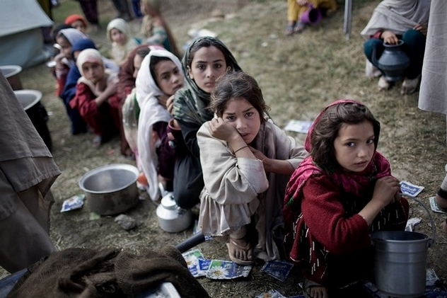

Humanitarian Aid Hub: Empathy in Action
Welcome to our Humanitarian Aid Hub, a compassionate space dedicated to addressing and alleviating the challenges faced during humanitarian crises. In times of conflict, natural disasters, and emergencies, the collective power of empathy and support can make a profound difference. Explore resources, stories of resilience, and opportunities to contribute, as we unite to bring hope, relief, and solidarity to those in need. Together, we stand as a force for positive change in the face of adversity

Types of Humanitarian Crises:
Conflict-Induced Crises:Resulting from armed conflicts, wars, or civil unrest, leading to displacement, violence, and disruption of essential services.
Natural Disasters:Caused by environmental forces such as earthquakes, hurricanes, floods, wildfires, and tsunamis, resulting in widespread destruction and displacement.
Famine and Food Insecurity:Arising from severe food shortages, droughts, or disruptions in agricultural systems, leading to hunger and malnutrition on a large scale.
Epidemics and PandemicsHealth emergencies caused by the rapid spread of infectious diseases, challenging healthcare systems and requiring international cooperation for containment.
Forced Displacement:Involuntary movement of populations due to persecution, violence, or human rights violations, resulting in refugee or internally displaced persons (IDP) crises.
Environmental Crises:Resulting from ecological imbalances, pollution, deforestation, and climate change, impacting communities and ecosystems.
Complex Emergencies:Overlapping crises, often involving a combination of conflict, displacement, and environmental challenges, leading to a complex humanitarian situation.h3>
Conflict-Induced Crises:
Preparedness for conflict-induced crises involves a multifaceted approach to mitigate the impact of armed conflicts and support affected populations. Here are key strategies:
Early Warning Systems:Establish and maintain early warning systems to detect and anticipate potential conflicts. This allows for timely intervention and the implementation of preventive measures.
Community Engagement:Foster strong community ties and engagement to build resilience. Encourage community members to participate in conflict prevention initiatives and share information about potential threats.
Conflict Sensitivity TrainingProvide conflict sensitivity training for humanitarian workers, organizations, and community leaders. This training enhances the understanding of local dynamics and helps prevent unintended negative consequences of interventions.
Civil Society InvolvementFCollaborate with local civil society organizations and community leaders. Involve them in conflict prevention efforts, as they often have valuable insights and can act as mediators.
Early Mediation and Diplomacy:
Facilitate early mediation and diplomatic interventions to address grievances and tensions before they escalate into full-blown conflicts.
Disarmament Programs:Support disarmament, demobilization, and reintegration (DDR) programs to reduce the prevalence of weapons in conflict-affected areas and reintegrate former combatants into society.
Protection Measures:Implement protection measures for vulnerable populations, including women, children, and displaced persons. Establish safe spaces and ensure access to essential services.
Human Rights Monitoring:Conduct regular human rights monitoring to identify and address human rights violations. Advocate for accountability and justice to prevent further escalation.
Psychosocial Support Services:Establish psychosocial support services for individuals affected by conflict, including counseling and mental health services to address trauma and stress.
Livelihood Support Programs:Implement livelihood support programs to enhance economic stability in conflict-affected areas. This can contribute to community resilience and reduce the risk of further tensions.
Access to Education:Ensure continued access to education, even in conflict zones. Education provides stability for children and youth and contributes to long-term peacebuilding.
Infrastructure Resilience:Strengthen critical infrastructure resilience to withstand and recover from the impact of conflict. This includes healthcare facilities, water and sanitation systems, and communication networks.
Coordination Mechanisms:Establish effective coordination mechanisms among humanitarian organizations, government agencies, and local authorities to streamline response efforts and avoid duplication.
Media and Information Management:Promote responsible and conflict-sensitive reporting by the media. Information management is crucial to prevent the spread of misinformation and to maintain accurate reporting during crises.
By implementing these preparedness strategies, communities and organizations can contribute to conflict prevention, protection of vulnerable populations, and the overall resilience of communities affected by armed conflicts.
Forced Displacement:
Preparedness for forced displacement involves comprehensive strategies to address the challenges faced by individuals and communities forced to leave their homes due to various factors. Here are key strategies:
Risk Assessment and Early Warning Systems:Conduct risk assessments to identify areas prone to forced displacement. Implement early warning systems to detect potential triggers and take preventive measures.
Community Engagement and Awareness:Engage with affected communities to raise awareness about the risks of displacement and provide information on available resources and support services.
Legal Protections and Advocacy:Advocate for and ensure legal protections for displaced populations. Collaborate with legal aid organizations to assist individuals in accessing their rights and protections.
Humanitarian Assistance Planning:Develop and regularly update humanitarian assistance plans to ensure the timely and effective delivery of aid to displaced populations. Include provisions for shelter, food, water, healthcare, and psychosocial support.
Camp Management and Shelter Programs: